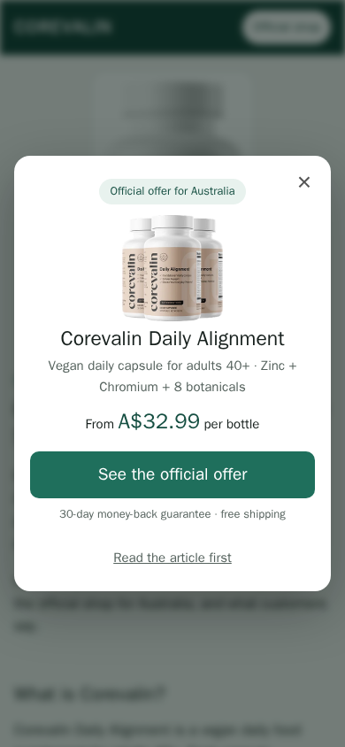
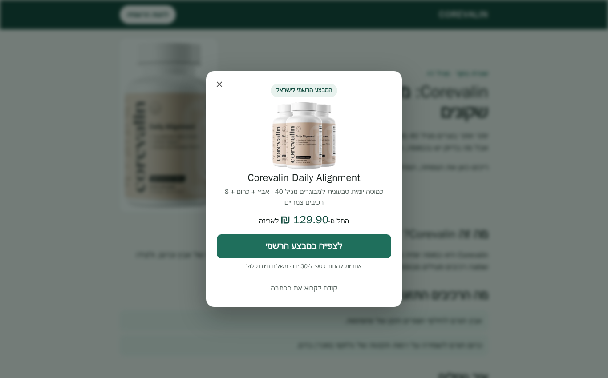
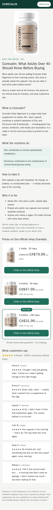

/ = Australia (home) · /ca/ = Canada · /il/ = Israel (Hebrew)
Buttons go to /go/au, /go/ca, /go/il — the tracking link is never in the page. The Cloudflare Worker sends real visitors on; bots, server networks and IPs clicking more than 4×/hour go back to the page instead.
Download ZIP (pages + images + _worker/)


